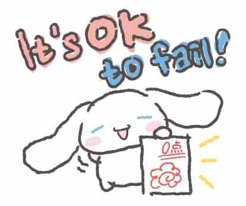
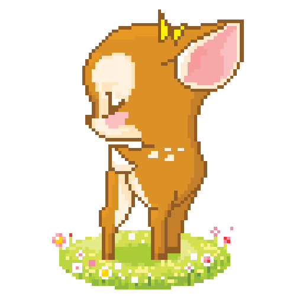
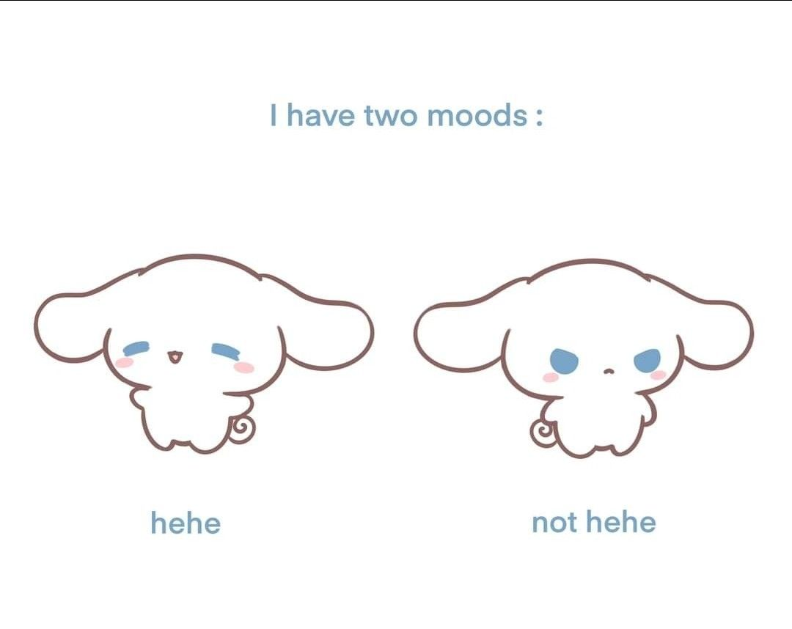
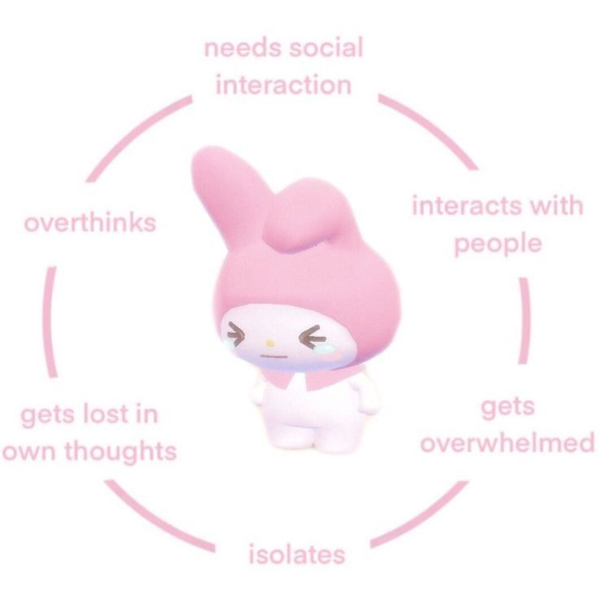
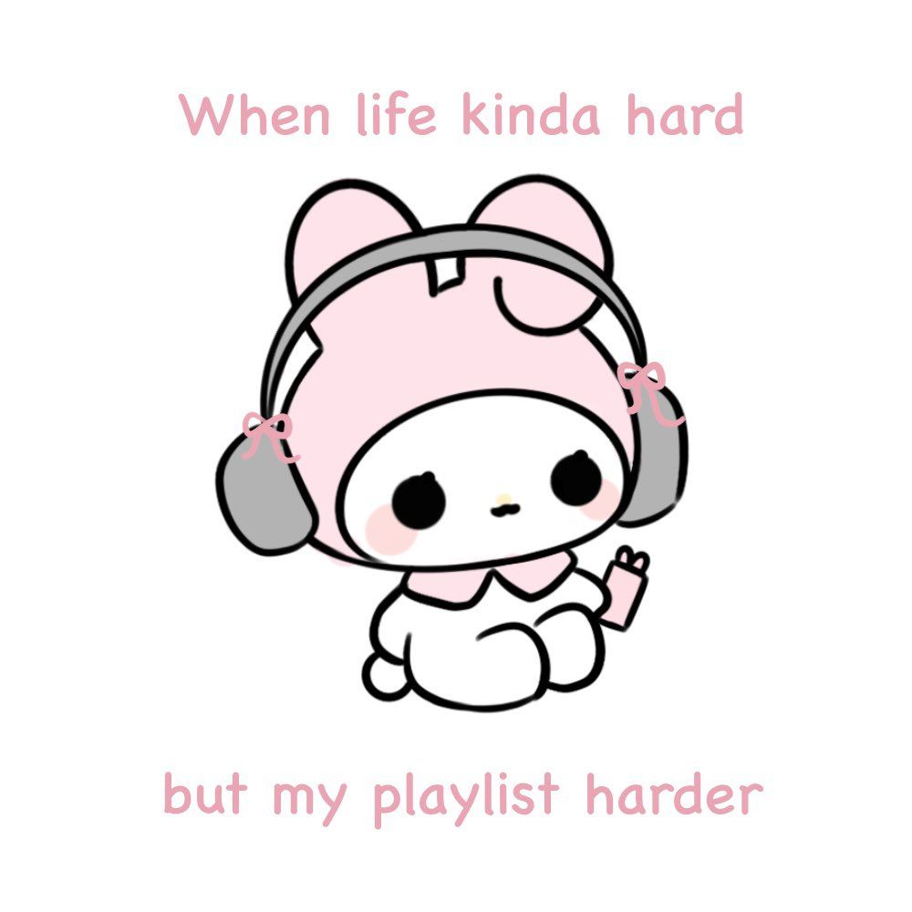

saturday
bilingual note
this page has an english / spanish toggle. i'm working on making the whole site bilingual, but it'll take me some time. thank you for visiting, i want to kiss you on the mouth mwah
lately music players and ui design have been living in my head. i keep finding myself thinking about layouts, components, and how things should feel when someone interacts with a page.
i also finally figured out what r2 bucket storage is, which immediately sent me down a rabbit hole of rethinking parts of my website.
at the same time i'm finishing up the quarter, so most of my energy is going toward wrapping up assignments, but ideas for other projects keep popping up.
a few things on my mind right now:
- finishing the quarter strong
- casaingles
- somushroom.org
- the somushroom app
just writing them down here so i don't lose them + accountability
i wanted this player to feel a little more interactive, so the svg logos also work as direct links to the song in your preferred music app.
⠀⠀⠀⠀⢀⣤⠤⣄⠀⠀⠀⠀⣠⠤⣄⠀⠀⠀
⠀⠀⠀⢠⠞⠀⠀⠈⢷⠀⠀⡜⠃⠀⠈⢳⠀⠀
⠀⠀⠀⣾⠀⠀⠀⠀⠘⡇⢰⠅⠀⠀⠀⠸⡇⠀
⠀⠀⠀⣿⠀⠀⠀⠀⠀⡇⣾⠀⠀⠀⠀⢸⠃⠀
⠀⠀⠀⢹⡀⠀⠀⠀⠀⡇⣿⠀⠀⠀⠀⡾⠀⠀
⠀⠀⠀⠸⡇⠀⠀⠀⠀⠷⠿⠀⠀⠀⢰⠇⠀⠀
⠀⢀⡴⠛⠃⠀⠀⠀⠀⠀⠀⠀⠀⠀⠘⢶⡀⠀
⢰⠟⠀⠀⠀⠀⠀⠀⠀⠀⠀⠀⠀⠀⠀⠀⢻⡄
⣿⠁⠀⠀⠀⠀⠀⠀⠀⠀⠀⠀⠀⠀⠀⠀⠀⣷
⢹⠀⠀⠀⢰⡆⠀⠀⠀⠀⠀⠀⢀⣄⠀⠀⠀⡟
⠈⢧⡀⠀⠀⠀⠀⠀⢄⡀⣀⠀⠀⠁⠀⠀⣸⠃
⠀⠈⠻⢦⣀⠀⠀⠀⠚⠙⠂⠀⠀⠀⣀⡴⠋⠀
⠀⠀⠀⠀⠈⠉⠓⠒⠲⠶⠶⠒⠒⠋⠁⠀⠀⠀
the last couple weeks have been a little chaotic mentally.
i keep going back and forth between two thoughts: maybe college just isn't right for me right now because i can't give it my full attention... and at the same time this might be the only opportunity i get to do this with a grant. so i keep telling myself to push through.
but i'm tired.
i miss being outside more. walking, gardening, driving out toward the mountain. lately everything has been screens, assignments, and technology and my brain feels like it's running hot all the time.
my professor has honestly been really patient with me. i've been one of his shittiest students for a few classes now, which weirdly makes it feel worse when i'm struggling to keep up lately. mental health has been kicking my ass a little and it's hard not to feel guilty about that.
on top of that my ocd has been doing this thing where i get stuck in smell-checking loops. apparently it's really common. your brain swears something smells off, so you keep searching for the source. but the more you check, the more real it feels. today i spent like 30 minutes panic cleaning because i was convinced something smelled wrong.
pictures + gifs






it was never just a phase mom